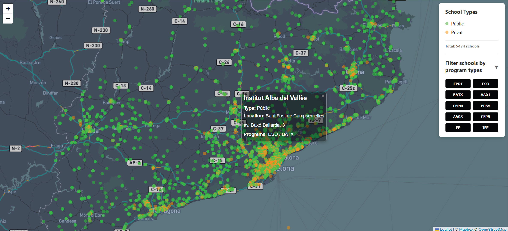

Schools of the Catalonia Community is a research and mapping project focused on the educational landscape of Catalonia, categorized by school programs and types of funding.
The interactive map allows users to filter schools by program type, displaying only the relevant institutions. Through this visualization, clear spatial patterns emerge: small municipalities have significantly fewer private schools compared to large cities.
The project features eight main educational programs. Three primary funding models—public, concertadas, and private—are consolidated into two mapped categories: public and private (the latter combining concertadas and private schools).
The project is ongoing, with additional analytical features and tools currently in development.

Click the image above to open the application in full screen.